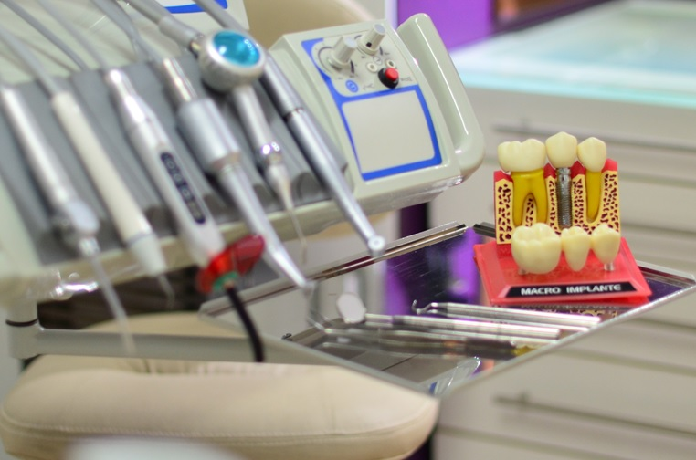

COVID 19 Y La Salud Bucal
Efectos y consecuencias en la Salud Bucal a partir de decisiones protocolares de suspensión de la atención odontológica durante la cuarentena.

El 20 de marzo entró en vigencia la Emergencia Sanitaria decretada por el Poder Ejecutivo Nacional, estableciendo las medidas adoptadas por la OMS al recomendar la
“suspensión de toda y cualquier actividad de medicina dental, estomatología y odontología, excepto en situaciones que se demuestren como urgentes y urgentes”.
Esta disposición afectó de forma directa a los pacientes que debieron interrumpir sus tratamientos odontológicos, con el perjuicio que eso significa. Además, muchos profesionales que por ser grupo de riesgo quedaron impedidos de seguir ejerciendo su profesión. Por otro lado, la cobertura del servicio de odontología por parte de las Obras Sociales y Prepagas también se vio afectada por la reducción de la utilización de las mismas.
Las rehabilitaciones protéticas quedaron interrumpidas por un largo período debido a la prohibición del ejercicio de los laboratoristas. Un paciente no rehabilitado puede tener complicaciones en su función y eficacia masticatoria, derivando en problemas digestivos. Considerando que los pacientes de avanzada edad son los que más requieren de éstos tratamientos.
Las infecciones bucales que no presentan cuadros agudos, al no ser tratadas, deterioran el sistema inmunitario del paciente.
Del mismo modo, los tratamientos de ortodoncia sin supervisión también pueden ocasionar complicaciones y detienen el curso del tratamiento.
En las urgencias odontológicas se observó un aumento en las disfunciones como consecuencia de cuadros de ansiedad y estrés. Aquellas, como el bruxismo nocturno, pueden causar desde dolor en uno o un grupo de dientes hasta la fractura de piezas dentarias.
Y así podemos enumerar una infinidad de problemáticas que afectan la salud bucal consecuencia de las medidas tomadas.
Es importante recordar que
“sin salud bucal, no hay salud general”.
Od. Eugenia Quiroga Odera (MP 13381)
13 de agosto 2020. La Plata, Argentina.